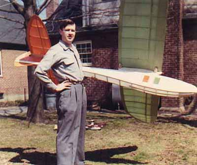
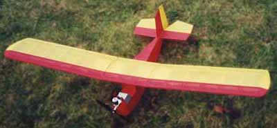
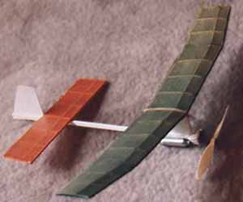
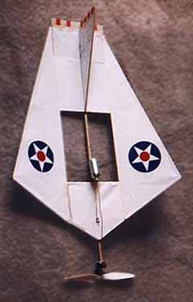
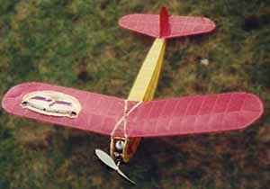
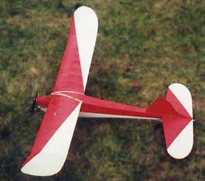
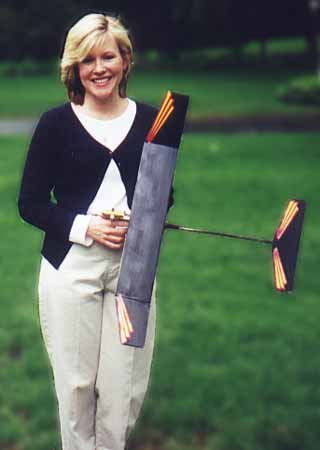

Ed Toner with his 108" span Leprechaun circa 1957
|
Here are a few sport free flight models built by FFML member Ed Toner. It is clear he has a fine eye for detail, and a long time love of aviation.
| |
|

020 scale Sky Pup ultralight | |
|---|---|
Brown A-23 CO2 
|  |
|
A.A. Lidberg's Simplex
Vagabond, 020 replica
English Electric Wren
|  |
|  | |
|
Ed's daughter Eileen with
|

|
return to
Copyright 2000, Thayer Syme. All rights reserved